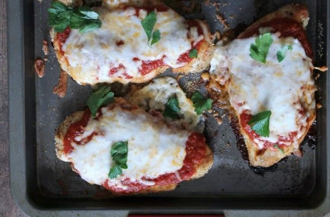

Baked Chicken Parmesan
Favorite this Recipe!

Skill level: Easy
Estimated Cooking Time: 50 Minutes
Estimated Yeild: 4-5 Boneless Chicken Breasts
Pairs well with:
- Spaghetti
- Caesar Salad
- Garlic Bread
- Broccoli and Cauliflower
Ingredients:
- 2 lbs Boneless Chicken Breast Cutlets
- 1/2 tsp Garlic, Granulated
- 1/2 tsp Onion Powder
- 3/4 cup Sauce
- 1 tsp Italian Seasoning
- 1/2 tsp Ground Pepper
- 1/2 tsp Salt
- 1/2 cup Wholegrain Breadcrumbs, Unseasoned
- 3/4 cup Mozzarella Cheese
- 2 tbsp Parmesean, Grated
- Olive oil (optional)
Directions:
- Preheat oven to 375 degrees.
- Add breadcrumbs, garlic, onion poweder, Italian seasoning, salt, pepper, and parmesean cheese to a
medium
shallow bowl and mix well.
- Coat a sheet pan with olive oil, ideally using a brush. Alternatively, you can use non-stick
aluminum foil to skip the oil entirely.
- Dredge each chicken cutlet in the breadcrumb mixture and place them on the sheet pan. Be sure to
discard the
breadcrumb mixture afterwards!
- Once the oven is heated up, bake the chicken for 15 minutes.
- Turn the chicken over and bake for another 15 minutes.
- Remove chicken from the oven, but don't turn the oven off yet! Starting with the sauce, top each
cutlet with sauce and mozzarella cheese.
- Bake for another 7-10 minutes until the cheese melts.
- Serve on its own or with your favorite side dish, and enjoy!